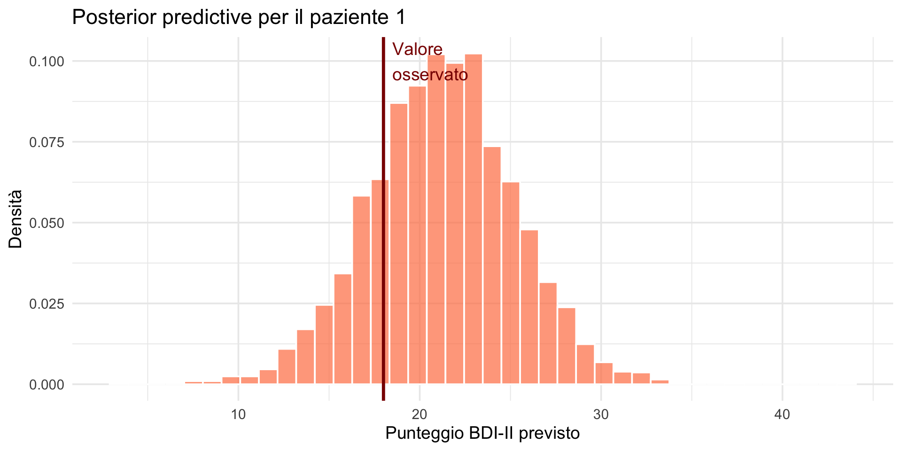
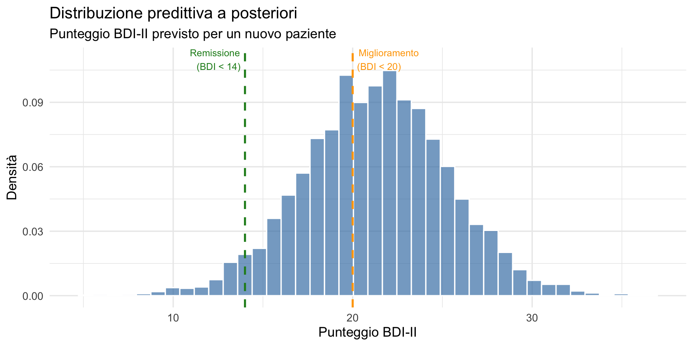
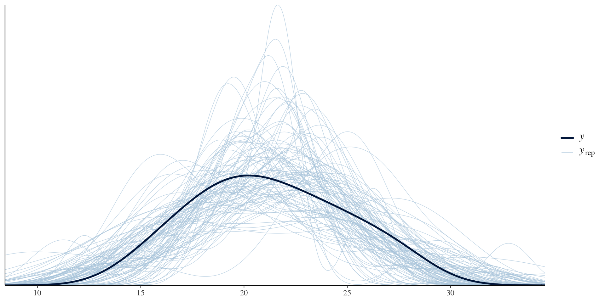
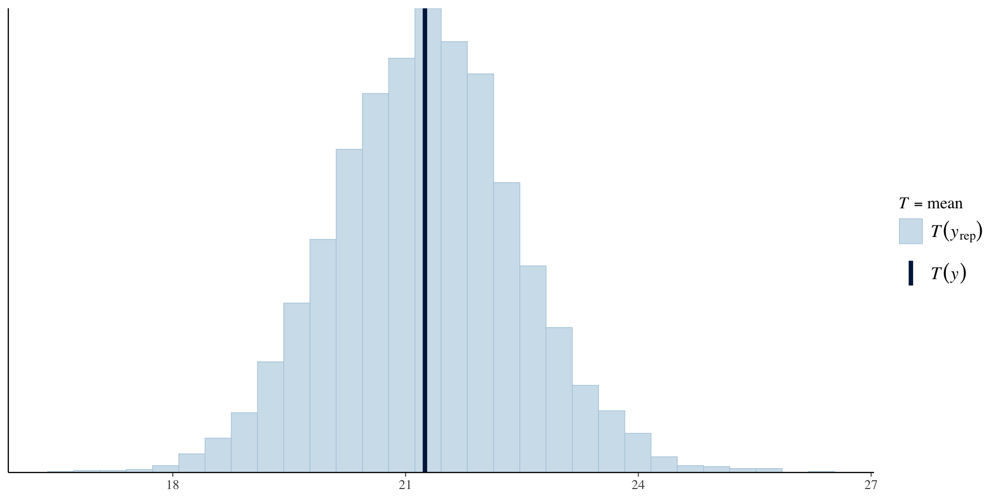
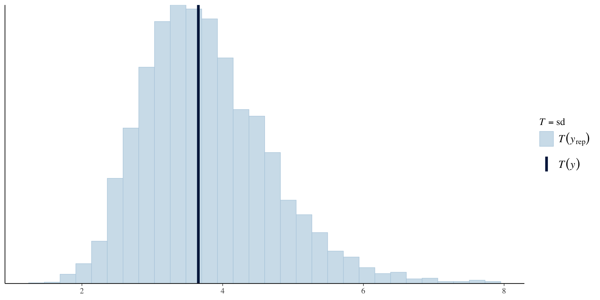
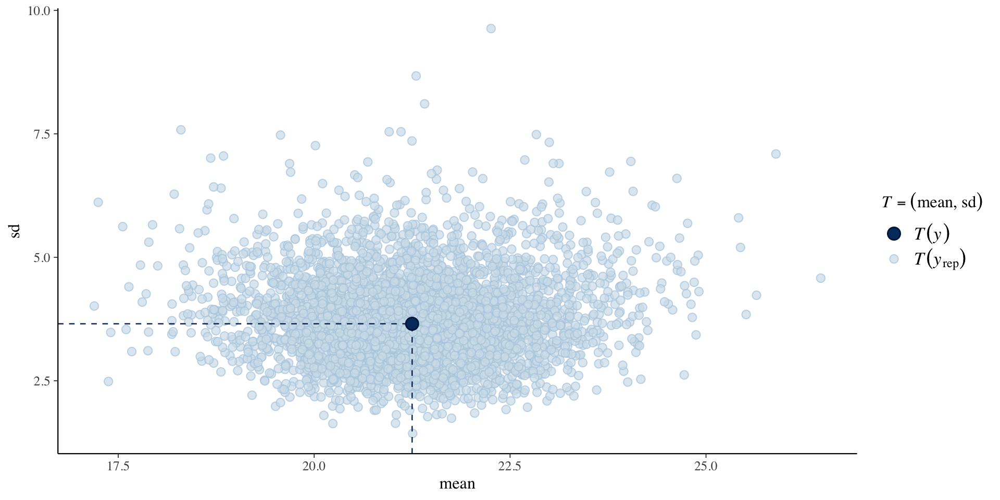

Distribuzione predittiva a posteriori
Applicazioni pratiche con brms — Segmento 2
![]()
27 febbraio 2026
Obiettivi
- Usare brms per generare la distribuzione predittiva a posteriori.
- Interpretare i risultati e rispondere a domande cliniche.
- Eseguire il posterior predictive check con le funzioni di brms.
- Estrarre previsioni per nuovi pazienti dal modello.
Parte 1: dai concetti alla pratica
Ricapitolando dal segmento 1
Abbiamo imparato che:
- La posterior predictive distribution risponde alla domanda: “Cosa mi aspetto in futuro, dato ciò che ho osservato?”
- Si ottiene estraendo θ dalla posterior e generando nuovi dati.
- Combina incertezza sui parametri e variabilità nei dati.
Ora: vediamo come fare tutto questo automaticamente con brms.
Perché usare brms?
Nella pratica, non calcoleremo mai la posterior predictive “a mano”.
Il pacchetto brms (Bayesian Regression Models using Stan):
- stima modelli bayesiani con sintassi familiare (simile a
lm()); - genera automaticamente la posterior predictive distribution;
- fornisce strumenti per il posterior predictive check;
- gestisce modelli molto più complessi di quelli che potremmo calcolare a mano.
Parte 2: un esempio completo
Efficacia della CBT per la depressione
Uno studio valuta l’efficacia di un intervento CBT. Misuriamo i punteggi BDI-II post-trattamento in 20 pazienti.
Ricordate la Lezione 22: abbiamo usato il BDI-II per il prior predictive check. Ora usiamo lo stesso strumento, ma con dati reali e un modello stimato.
Stimiamo il modello con brms
Il modello è: \[
\text{BDI}_i \sim \text{Normale}(\mu, \sigma).
\] Questo è il modello Normale che abbiamo studiato nella Lezione 19 — la funzione brm() stima la distribuzione a posteriori di \(\mu\) e \(\sigma\) usando i metodi MCMC.
Vediamo i risultati
Family: gaussian
Links: mu = identity
Formula: bdi ~ 1
Data: dati (Number of observations: 20)
Draws: 4 chains, each with iter = 2000; warmup = 1000; thin = 1;
total post-warmup draws = 4000
Regression Coefficients:
Estimate Est.Error l-95% CI u-95% CI Rhat Bulk_ESS Tail_ESS
Intercept 21.28 0.82 19.66 22.88 1.00 2810 2294
Further Distributional Parameters:
Estimate Est.Error l-95% CI u-95% CI Rhat Bulk_ESS Tail_ESS
sigma 3.81 0.64 2.82 5.24 1.00 2675 2150
Draws were sampled using sample(hmc). For each parameter, Bulk_ESS
and Tail_ESS are effective sample size measures, and Rhat is the potential
scale reduction factor on split chains (at convergence, Rhat = 1).Interpretazione
- Intercept (μ): media stimata dei punteggi BDI-II, con intervallo credibile al 95%.
- sigma (σ): deviazione standard stimata.
Ricordate la Lezione 20: l’intervallo credibile al 95% indica il range di valori più plausibili per il parametro — ed è interpretabile direttamente come probabilità.
Parte 3: generare la posterior predictive
La funzione posterior_predict()
brms genera automaticamente previsioni dalla distribuzione predittiva a posteriori:
Dimensioni: 4000 simulazioni × 20 pazientiOgni riga è una “replica” dei dati: cosa il modello prevede per i 20 pazienti.
Esaminiamo le previsioni
[,1] [,2] [,3] [,4] [,5] [,6]
[1,] 21.28585 19.42088 24.97599 25.97949 19.66229 23.90891
[2,] 19.02241 23.05965 25.66108 22.17188 22.70765 19.64487
[3,] 16.92714 15.86538 20.32097 21.81112 24.95609 23.10102
[4,] 18.53885 27.08793 26.77901 27.86400 23.14894 27.31911
[5,] 21.38021 23.98252 22.55778 28.62428 28.57637 13.34656Ogni numero è un punteggio BDI-II simulato.
Previsioni per un singolo paziente
Focalizziamoci sul paziente 1 (BDI osservato = 18):
Previsioni per paziente 1: Media: 21.2 Intervallo 95%: 13.4 - 29 [1] 21.285849 19.022415 16.927138 18.538850 21.380207 24.034025 21.969007
[8] 16.405442 18.550032 15.370574 23.878816 21.550907 15.743145 16.304015
[15] 20.735709 20.170397 17.134643 26.207240 22.464827 19.116668 22.054529
[22] 21.811327 19.085858 17.873145 24.681583 14.422344 25.241792 18.360518
[29] 26.815659 18.709357 20.236653 22.779955 26.321876 16.679334 19.537194
[36] 22.631388 20.983967 22.287171 19.791760 17.441049 31.794464 13.036576
[43] 26.029922 16.685496 15.479096 22.204133 27.386611 23.037587 16.338702
[50] 18.416966 17.333955 16.005773 26.487342 30.489903 16.296819 22.655099
[57] 19.055660 24.777225 22.082889 19.537599 24.324675 28.037399 26.490743
[64] 21.811461 25.262845 18.464534 24.561028 25.816736 22.760240 19.746989
[71] 22.239812 19.800480 22.130866 20.723793 21.119484 18.535551 24.836304
[78] 22.355401 18.738804 22.220288 19.248288 21.985824 29.912049 17.599342
[85] 23.002354 16.418071 23.061101 16.424324 15.235618 23.519822 18.382995
[92] 14.788606 16.432248 24.939468 22.254568 21.939143 24.836287 22.766779
[99] 3.415118 20.209424Visualizziamo

Distribuzione predittiva a posteriori per un singolo paziente
Esaminiamo quello che abbiamo fatto nei dettagli.
Una volta stimato il modello bayesiano, è possibile valutare quali valori del punteggio BDI-II il modello considera plausibili per un singolo paziente attraverso la distribuzione predittiva a posteriori (posterior predictive distribution).
Nel presente studio il modello assume che i punteggi BDI-II seguano una distribuzione Normale:
\[ \text{BDI}_i \sim \mathcal{N}(\mu, \sigma), \] dove i parametri \(\mu\) (media) e \(\sigma\) (deviazione standard) non sono stimati come valori puntuali, ma come distribuzioni a posteriori, ottenute combinando i dati osservati con le assunzioni del modello.
Generazione delle previsioni
La funzione posterior_predict() di brms utilizza queste distribuzioni a posteriori per generare dati simulati. In particolare, per ciascuna iterazione dell’algoritmo MCMC:
- viene estratta una coppia di valori (\(\mu^{(s)}, \sigma^{(s)}\)) dalla posterior;
- viene simulato un punteggio BDI-II da una distribuzione Normale con tali parametri: \[ \text{BDI}^{(s)} \sim \mathcal{N}(\mu^{(s)}, \sigma^{(s)}). \]
Ripetendo questo procedimento per tutte le iterazioni, si ottiene un insieme di migliaia di valori simulati che rappresentano possibili osservazioni future coerenti con il modello.
Nel nostro caso, per il paziente 1 otteniamo un vettore di circa 4000 valori (previsioni_paz1), ciascuno dei quali costituisce un punteggio BDI-II previsto.
Significato del “punteggio BDI-II previsto”
Il punteggio BDI-II previsto non corrisponde a una stima puntuale del punteggio del paziente 1, né a una previsione deterministica. Esso rappresenta invece un possibile valore del BDI-II che il modello considera plausibile, tenendo conto simultaneamente di:
- incertezza sui parametri del modello (\(\mu\) e \(\sigma\));
- variabilità individuale non spiegata (rumore residuo).
In questo senso, la distribuzione predittiva a posteriori descrive ciò che potremmo aspettarci di osservare
- se il paziente 1 fosse valutato nuovamente, oppure
- se osservassimo un nuovo paziente proveniente dalla stessa popolazione.
Interpretazione del grafico
L’istogramma mostra la distribuzione dei punteggi BDI-II previsti per il paziente 1.
- L’asse orizzontale (“Punteggio BDI-II previsto”) rappresenta i valori del BDI-II generati dal modello.
- L’asse verticale (“Densità”) indica la frequenza relativa di tali valori.
- La forma della distribuzione riflette la combinazione dell’incertezza sui parametri e della variabilità individuale.
La linea verticale indica il valore osservato del paziente 1 (BDI-II = 18) e consente di valutare visivamente la coerenza tra il dato osservato e le previsioni del modello.
Il fatto che il valore osservato cada in una regione di alta densità suggerisce che esso è compatibile con quanto previsto dal modello.
Perché la distribuzione non è centrata sul valore osservato
È importante notare che il modello utilizzato include solo un’intercetta (
bdi ~ 1) e non incorpora informazioni specifiche del singolo paziente. Di conseguenza, la distribuzione predittiva non è centrata sul valore osservato del paziente 1, ma sulla media stimata della popolazione.Il punteggio osservato rappresenta quindi una singola realizzazione possibile all’interno della distribuzione predittiva, non il suo valore centrale.
Sintesi
In conclusione, il grafico della distribuzione predittiva a posteriori mostra l’insieme dei punteggi BDI-II che il modello bayesiano considera plausibili per un paziente come il paziente 1.
Esso fornisce una rappresentazione intuitiva dell’incertezza predittiva del modello e permette di confrontare direttamente le osservazioni empiriche con le previsioni generate dal modello.
Parte 4: previsioni per nuovi pazienti
Prevedere il prossimo paziente
La domanda clinica più importante: cosa mi aspetto per un nuovo paziente?
Visualizziamo la previsione

Parte 5: rispondere a domande cliniche
Domanda 1: probabilità di remissione
Un punteggio BDI-II < 14 indica remissione.
P(BDI < 14) = 3.9 %La probabilità di remissione per un nuovo paziente è bassa — il trattamento riduce i sintomi ma non li elimina per la maggior parte dei pazienti.
Domanda 2: probabilità di miglioramento clinico
Un punteggio BDI-II < 20 indica miglioramento clinicamente rilevante.
P(BDI < 20) = 37.8 %Una quota rilevante di nuovi pazienti potrebbe mostrare un miglioramento clinicamente rilevante.
Domanda 3: probabilità di depressione grave
Un punteggio BDI-II > 28 indica depressione grave.
P(BDI > 28) = 4.7 %Il rischio di depressione grave dopo il trattamento è contenuto.
Domanda 4: intervallo “tipico”
Qual è il range di punteggi che osserveremo nel 80% dei casi?
Intervallo 80%: 16.2 - 26.4 Questo intervallo è più largo dell’intervallo di credibilità per \(\mu\) (Lezione 20) perché include anche la variabilità individuale, non solo l’incertezza sul parametro.
Parte 6: Posterior predictive check
Il modello riproduce adeguatamente i dati?
Il posterior predictive check (PPC) è uno strumento fondamentale nella modellistica bayesiana per valutare l’adeguatezza del modello ai dati osservati.
L’idea di base è semplice: un buon modello dovrebbe essere in grado di generare dati simili a quelli realmente osservati.
Il PPC confronta quindi:
- i dati osservati;
- i dati simulati dalla distribuzione predittiva a posteriori del modello.
Se i dati osservati appaiono plausibili rispetto alle simulazioni, il modello può essere considerato coerente con i dati.
Ricordate la Lezione 22: il prior predictive check verificava se le prior producevano dati sensati. Ora il posterior predictive check verifica se il modello stimato riproduce i dati osservati.
Visualizzazione con pp_check()
La funzione pp_check() di brms permette di effettuare questi confronti in modo grafico.

Questo grafico sovrappone:
- la distribuzione dei punteggi BDI-II osservati;
- le distribuzioni di più dataset simulati dal modello.
Interpretazione del grafico
- Linea scura: distribuzione dei dati osservati.
- Linee chiare: distribuzioni dei dati simulati dal modello.
Se la distribuzione osservata è ben “avvolta” dalle distribuzioni simulate, significa che il modello riesce a riprodurre forma, posizione e dispersione dei dati reali.
Al contrario, scostamenti sistematici (ad esempio differenze nella media, nella variabilità o nelle code) suggerirebbero una possibile inadeguatezza del modello.
Check su statistiche riassuntive
Oltre al confronto visivo delle distribuzioni complete, è utile verificare se il modello riproduce correttamente alcune statistiche chiave dei dati.
Check sulla media

In questo grafico:
- la linea verticale rappresenta la media osservata;
- l’istogramma rappresenta la distribuzione delle medie simulate.
Se la media osservata cade in una regione di alta densità delle medie simulate, il modello riproduce adeguatamente il livello medio dei dati.
Check sulla variabilità

In modo analogo, questo grafico confronta la deviazione standard osservata con quelle generate dal modello.
La coerenza tra SD osservata e simulate indica che il modello cattura correttamente la variabilità dei punteggi BDI-II.
Check congiunto su media e variabilità

Questo controllo considera simultaneamente:
- la media;
- la deviazione standard.
Il punto rappresenta le statistiche osservate, mentre la nuvola di punti rappresenta le statistiche ottenute dai dati simulati.
Se il punto osservato cade all’interno della nuvola, il modello riproduce in modo congiunto sia il livello medio sia la dispersione dei dati.
Conclusione
Nel complesso, i posterior predictive check consentono di valutare se il modello bayesiano fornisce una rappresentazione plausibile dei dati osservati.
In questo esempio, la coerenza tra dati osservati e simulati suggerisce che il modello con sola intercetta e distribuzione Normale costituisce una descrizione adeguata dei punteggi BDI-II post-trattamento.
Riepilogo e percorso del corso
Il percorso fin qui
Lezioni 5–11 — Probabilità, distribuzioni, verosimiglianza.
Lezioni 14–16 — Inferenza frequentista, IC, p-value, crisi di replicabilità.
Lezione 17 — I tre ingredienti bayesiani. Approssimazione a griglia.
Lezione 18 — Apprendimento sequenziale.
Lezione 19 — Famiglie coniugate: Beta-Binomiale e Normale-Normale.
Lezione 20 — Sintesi del posterior: stime puntuali, ETI, HDI, domande probabilistiche.
Lezione 22 — Distribuzione predittiva a priori e prior predictive check.
Lezione 23 (oggi) — Distribuzione predittiva a posteriori e posterior predictive check.
Nella prossima lezione studieremo l’influenza della distribuzione a priori: analisi di sensibilità e robustezza. Quando possiamo fidarci dei risultati? E cosa succede se cambiamo il prior?
Le funzioni chiave di brms
| Funzione | Cosa fa |
|---|---|
brm() |
Stima il modello bayesiano |
posterior_predict() |
Genera previsioni dalla posterior predictive |
pp_check() |
Esegue il posterior predictive check |
Il flusso di lavoro
- Stima il modello con
brm(). - Controlla il modello con
pp_check(). - Genera previsioni con
posterior_predict(). - Rispondi alle domande calcolando proporzioni e quantili.
I punti chiave
brmsautomatizza la generazione della posterior predictive.posterior_predict()restituisce una matrice di previsioni.Da questa matrice possiamo calcolare qualsiasi probabilità.
pp_check()verifica se il modello spiega bene i dati.Le previsioni includono tutta l’incertezza (parametri + dati).
Il messaggio fondamentale
Con
brms, passare dalla teoria alla pratica è semplice: il pacchetto gestisce tutta la complessità computazionale, permettendoci di concentrarci sull’interpretazione e sulle domande scientifiche.
Per la prossima lezione
Materiale di studio: https://ccaudek.github.io/utet-companion/
Prossimo argomento:
“L’influenza della distribuzione a priori: sensibilità e robustezza.”
Vedremo come le nostre credenze iniziali influenzano le conclusioni — e quando possiamo fidarci dei risultati.